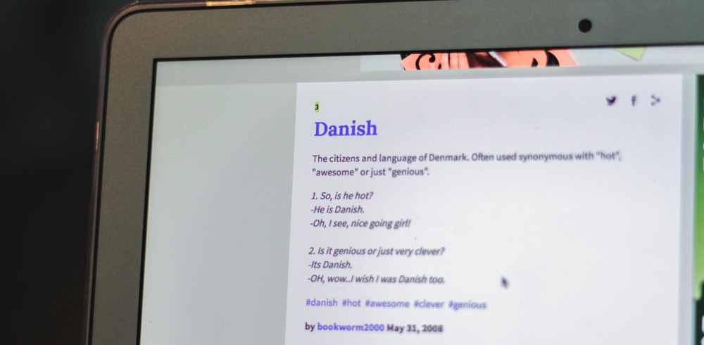
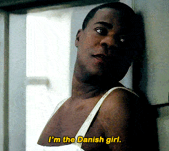
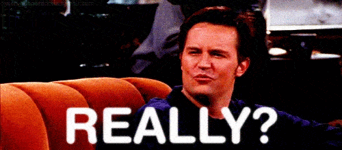
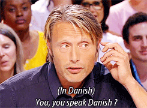

What it says about Danish: urbandictionary.com
What it says about Danishby Petr Mrkvicka | Oct 7, 2017
Have you ever wondered what the internet thinks about you, Danish? Well, we, in our editorial office, thought the internet is going to roast you some more! Sad day for the internationals. We can only wish we were Danes (or Danish)!
The citizens and language of Denmark.
Often used synonymous with "hot",
"awesome" or just "genious".
1. So, is he hot?
-He is Danish.
-Oh, I see, nice going girl!
2. Is it genious or just very clever?
-Its Danish.
-OH, wow..I wish I was Danish too.

Danish is the language spoken in Denmark. Many Norwegian and Swedish speakers also understand Danish.
Only few words differs from Norwegian, but the pronunciation is very different. You can say Danish is Norwegian spoken with your mouth full of mashed potatoes.
"Dude, the Norwegian guy ate mashed potatoes during our conversation. It sounded Danish"

someone who is very cool and gets all the women, is incredidibly good looking also.
"hey man your sooo dan-ish"
"man i wish i could be more dan-ish"
"dude he is so dan-ish"

Definition of someone who always bails last minute from plans
Never invite john out, he likes to danish everytime.
(v) Messing up in any situation given situation.
Person 1: Hey, can you pass me a cup of juice?
Person 2: Ok
*Drops cup of juice*
Person 1: Oh my god how you danish a cup of juice!?
Not a language - A throat infection.
Guy from England: Dude, He sounds like he ha's got a real sore throat !!
Guy from Norway: No, he's speaking Danish.
Guy from England: Sounds like a throat infection to me...!
Next article in a row: Kathrine fra UCplus om studerende fra udland